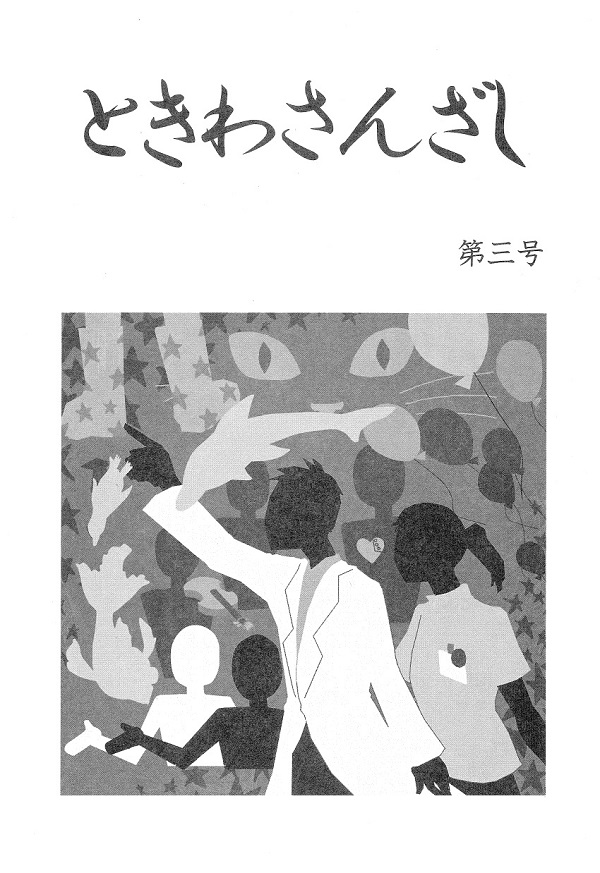

掲載
作品
第三号 (2014)
○画面右上の「掲載作品」をタップすると目次が表示されます
○作品ページでは、ビューワーの左半分・右半分をタップするとそれぞれ次のページ・前のページに移動できます
はじめに
この度は、宮崎大学医学部文芸部学祭部誌「ときわさんざし」第三号をお手にとっていただき、まことにありがとうございます。
今年も引き続き部誌を無事に発刊し、再び皆さんのお手元に渡ったことが、何よりも嬉しいです。
今年も、第一部を医学・医学生をテーマとした小説、第二部を自由課題の小説と致しました。
小説を書くには想像力が欠かせないものではありますが、ルーツとなるリアルが必ず必要となります。医学生が現実で体験したことや感じたことが必ず散りばめられています。ぜひ楽しんでいただけたらと思います。
宮崎大学医学部文芸部は、今年で部活動歴三年目を迎えました。
歴史はまだまだ浅いですが、少しでも皆様の心に響く部誌となるように、思いを込めて作りました。
秋深まるこの頃、一時の読書のおともにしてくださったのならば幸いです。
2014年 11月15日
宮崎大学医学部文芸部部長
